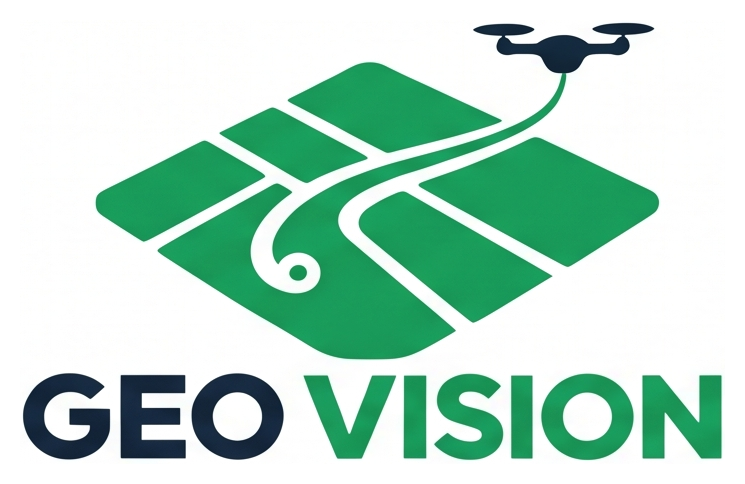

Ingresá con tu cuenta para abrir tus mapas.
Conectando con el servicio de acceso…
Recortá los márgenes y las leyendas. Ingresá los límites del mapa recortado, con el norte arriba. Las coordenadas impresas no se leen automáticamente; un punto GPS de la cámara no alcanza para ubicar toda la imagen.
4326: longitud/latitud en grados decimales. 3857: Web Mercator en metros. 32601–32660 / 32701–32760: UTM WGS84 norte / sur en metros (por ejemplo, 32720: zona 20 sur).